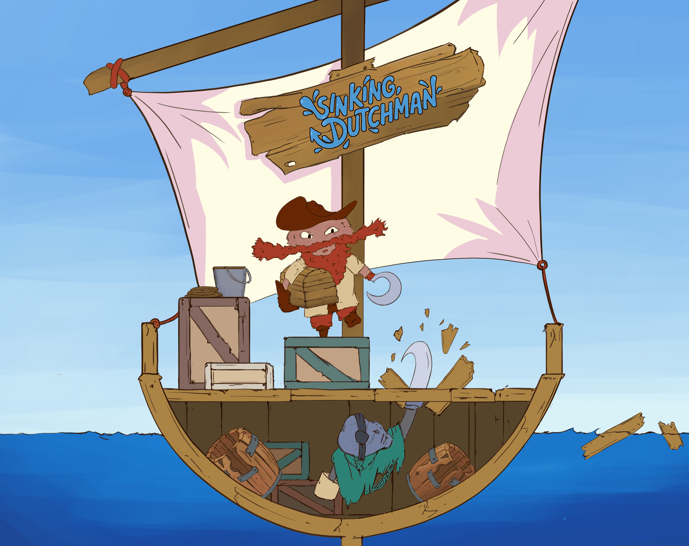

◇ Unreal Engine Project
SINKING
DUTCHMAN
Local asymmetric party game where a pirate faces a ghost aboard a sinking ship.

Gameplay
Pirate
Ghost
Skills
- Unreal Engine
- Blueprints
- Gameplay Programming
- Local Multiplayer
- Asymmetric Gameplay
- Interaction Systems
My contributions
- Player and input management
- Score and objective system
- Normal, blessed and cursed treasures
- Mechanics related to light and darkness
- Interactive traps: cannon, trapdoors, lanterns and stun
- Timers, interactions and gameplay balancing
Asymmetric gameplay
Sinking Dutchman is a party game developed solo in Unreal Engine. The game pits two players against each other with different roles and objectives.
The first player plays as a pirate who must explore the ship and collect as many treasures as possible before the time runs out.
The second player controls a ghost pirate whose role is to disrupt the pirate's progress. He can use different elements of the ship and several traps to slow down the pirate and make him lose points.
An important part of the development therefore consisted of creating systems allowing both characters to share the same environment while maintaining completely different mechanics and objectives.
The project is available on Itch.io and can be downloaded to try the gameplay.
View the project on Itch.io →